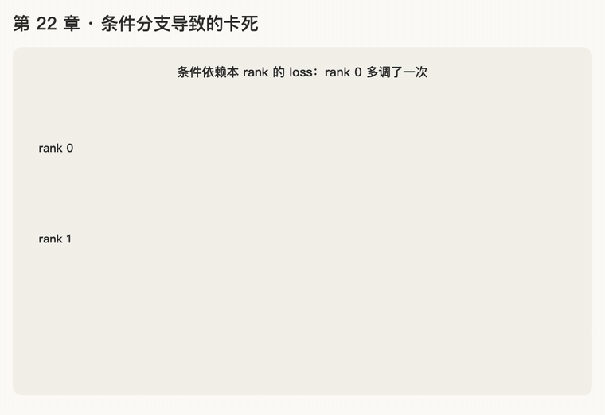

第 22 章 · 分布式存档与排错：每卡存一片，卡死先查顺序
本章回答：模型切在几十张卡上，怎么存档、怎么在不同卡数下读回来？分布式训练最常见的"卡住不动"是怎么回事，怎么查？
讲解日期：2026-11-14 · 上一章：第 21 章 PP / CP / EP · 下一章：第 23 章 先算账
对应原文：官方文档 Distributed Checkpoint（DCP）、torch.distributed.checkpoint.state_dict（〔在线〕）；多机报告 §7.2 可靠性、§7.3 NCCL 与启动、§9「常见故障速查」（distributed-pretraining/notes/03-engineering-report.md）；Ultra-Scale Playbook §A1 Distributed Training Profiling（ultrascale-playbook.md第 3624 行起）；本章 DCP 输出在本机 Gloo 2 进程上跑过本章缩写：DCP = Distributed CheckPoint（分布式 / 检查点）；hang = 卡死（程序不报错也不往前走）；OOM = Out Of Memory（显存不够）；全部缩写见 附录 · 缩写与术语表
讲解
第一步：为什么不能"rank 0 存一份"（2026-11-14）
第 10 章的存法是"整理成一个 state_dict，存一个文件"。到了 FSDP / TP：
- 参数是切开的 DTensor，每卡只有一片；要存一个完整文件，得先把所有片 all_gather 到 rank 0：70B 模型 + 优化器约 1 TB，rank 0 的内存根本放不下；
- 而且只有 rank 0 在写硬盘，几十张卡干等，慢。
DCP（分布式存档）：每张卡各存自己那一片，同时写，再加一个记录"哪片在哪"的元数据文件。
实测（2 进程，FSDP2 + AdamW）：
from torch.distributed.checkpoint.state_dict import get_state_dict, set_state_dict
import torch.distributed.checkpoint as dcp
msd, osd = get_state_dict(model, opt) # 拿到分片形式的 state_dict
dcp.save({"model": msd, "optim": osd}, checkpoint_id=path) # 所有 rank 都要调用
# path 下出现：['.metadata', '__0_0.distcp', '__1_0.distcp'] ← 每 rank 一个文件 + 元数据
读回来（把参数清零后再加载，比较 full_tensor()，两个 rank 都输出 restored equal True）：
msd, osd = get_state_dict(model, opt)
state = {"model": msd, "optim": osd}
dcp.load(state, checkpoint_id=path) # 原地填进 state
set_state_dict(model, opt, model_state_dict=state["model"], optim_state_dict=state["optim"])
一句话：DCP 让每卡同时存自己那片 + 一个元数据；save / load 所有 rank 都要调用。
第二步：换卡数也能读——重新分片（2026-11-14）
元数据里记的是"每一片在完整张量里的哪个位置"。加载时，DCP 按当前的切分方式，去文件里读自己需要的那几块。所以：
- 用 64 卡存的，可以用 32 卡加载（每卡读两片的范围）；
- 用 FSDP 存的，可以换成 FSDP + TP 加载；
- 想要单个文件（给推理用）：
torch.distributed.checkpoint.format_utils.dcp_to_torch_save转成普通的torch.save格式。
异步存档：dcp.async_save(...) 先把数据拷到 CPU 内存就返回，后台慢慢写硬盘，训练几乎不停。
一句话：元数据记的是"在完整张量里的位置"，所以换卡数、换并行方式都能读；async_save 后台写盘。
第三步：hang——最常见的分布式 bug（2026-11-14）
现象：没有报错，GPU 利用率掉到 0（或 100% 空转），日志不再往前走。
最常见原因：各 rank 调用集合通信的次数或顺序不一样（第 17 章铁律）。比如：
if loss.item() > threshold: # 每个 rank 的 loss 不同！
dist.all_reduce(stats) # 有的 rank 进了这个 if，有的没进
rank 0 进了 if，在 all_reduce 里等其他人；rank 1 没进，跑去下一步的 all_reduce。两边都在等对方，永远等下去。
其他常见原因：
| 现象 | 原因 |
|---|---|
| 刚启动就卡住 | 有的进程没起来、MASTER_ADDR / 端口不通、Mac 上没设 GLOO_SOCKET_IFNAME=lo0（第 16 章） |
| 跑一段时间后卡住 | 条件分支导致通信次数不一致；某个 rank 数据读完了提前退出循环；某个 rank OOM 崩了，其他人在等它 |
| DDP 卡在反向 | 有参数没参与 loss（第 18 章） |
| 只在 rank 0 存档时卡住 | 存档函数里有集合通信（如 DCP、full_tensor()），只有 rank 0 调了 |
一句话：hang 多半是各 rank 的集合通信次数或顺序不一致；条件分支、提前退出、只在 rank 0 调用通信是三大来源。
第四步：排错工具箱（2026-11-14）
| 工具 | 做什么 |
|---|---|
init_process_group(timeout=timedelta(minutes=10)) |
等太久就报错退出，而不是永远卡着 |
TORCH_DISTRIBUTED_DEBUG=DETAIL |
检查各 rank 的集合通信是否对得上，对不上直接报出是哪一个 |
TORCH_NCCL_ASYNC_ERROR_HANDLING=1（新版默认开） |
NCCL 出错或超时时让进程退出，方便重启 |
TORCH_NCCL_TRACE_BUFFER_SIZE=2000（Flight Recorder，飞行记录仪） |
记下最近的集合通信，卡死时导出，对比各 rank 停在第几次调用 |
NCCL_DEBUG=INFO |
打印 NCCL 用了哪些网卡、NVLink 还是 IB、哪种算法；跨机慢多半在这里看出走错网卡 |
py-spy dump --pid <PID> |
看卡住的进程此刻停在哪行 Python |
| 所有 rank 都打日志（带 rank 前缀） | 对比谁走到了哪一步 |
排查顺序：先让它超时报错（而不是无限等）→ 打开 DETAIL 看哪次通信对不上 → 用 py-spy 看每个 rank 停在哪行 → 回到代码找条件分支。
数值不一致也常见：各 rank 参数慢慢变得不一样（比如某个 buffer 没同步、随机数种子不同导致 dropout 不同步不要紧，但初始化不同就有问题）。定期检查：各 rank 对参数求和后 all_gather 比较。
一句话：先设超时，再开 DETAIL 对通信，py-spy 看停在哪，NCCL_DEBUG 看网络。
动画演示：条件分支导致的 hang

可交互版：animations/22-hang.html。开关：分支依赖本 rank 的 loss / 分支条件先 all_reduce 统一。
怎么看：
- 两条时间线是 rank 0 和 rank 1，每个方块是一次集合通信，编号是"第几次调用"；
- 分支依赖本 rank 的 loss：rank 0 多调了一次 all_reduce，两边的编号错开，最后都停在红色"等待"状态；
- 切到"先 all_reduce 统一条件"：所有 rank 用同一个判断结果，调用次数一致，顺利跑完。
练习与作答记录
题 1：64 卡 FSDP 训练，用 dcp.save 存档后，想在 16 卡上继续训。能直接加载吗？为什么？
作答：（待作答）
题 2：下面代码为什么会卡住？怎么改？
if rank == 0:
full = model.layers[0].weight.full_tensor() # full_tensor 内部要 all_gather
print(full.norm())
作答：（待作答）
题 3：训练跑了 3 小时后卡住，GPU 利用率 0%，没有报错。按什么顺序排查？列出你会用的两个环境变量。
作答：（待作答）
口诀
分布式存档每卡存一片，元数据记位置，换卡数照样读；save、load 人人都要调；
卡死多半是通信次数顺序不一致：条件分支、提前退出、只让 rank 0 调；
先设超时，再开 DETAIL，py-spy 看停在哪，NCCL_DEBUG 看网络。
本章复习卡片
- P76（DCP：每 rank 一个 .distcp + .metadata；get_state_dict / dcp.save / dcp.load / set_state_dict；所有 rank 都调用）
- P77（重新分片加载、async_save、dcp_to_torch_save）
- P78（hang 的三大来源：条件分支、提前退出、只在 rank 0 调通信；full_tensor 也是通信）
- P79（排错工具：timeout、TORCH_DISTRIBUTED_DEBUG=DETAIL、Flight Recorder、NCCL_DEBUG=INFO、py-spy）
附录 · 延伸阅读
推荐阅读
| 读什么 | 读哪里 | 读它为了什么 |
|---|---|---|
| ★ 官方教程「Getting Started with Distributed Checkpoint」 | 全文（〔在线〕） | DCP 的 save / load / async_save |
| ★ 多机报告 | 03-engineering-report.md §7.2–§7.3 与"常见故障速查" |
真集群上的故障清单 |
| 官方文档 Flight Recorder | 「Debugging hangs with Flight Recorder」（〔在线〕） | 卡死时导出通信记录、分析工具 |
| DeepSeek-V3 硬件复盘 | §6.1 可靠性（distributed-pretraining/materials/text/deepseek-v3-hardware-insights-2505.09343.txt） |
大集群上的故障率与应对 |
| Ultra-Scale Playbook §A1 | ultrascale-playbook.md 第 3624 行起 |
分布式 profiling 的时间线怎么看 |
数学原理
- 存档大小（混合精度 AdamW，存 fp32 主参数 + m + v，第 10 章）≈ \(12\Psi\) 字节，平均到每卡 \(12\Psi / N\)。
- 写盘时间 ≈ \(\frac{12\Psi}{N \times \text{每卡写带宽}}\)：并行写是 DCP 快的原因。
公式清单
| 写法 | 意思 |
|---|---|
get_state_dict(model, opt) / set_state_dict(...) |
取 / 填分片状态 |
dcp.save(state, checkpoint_id=path) / dcp.load / dcp.async_save |
分布式存取 |
init_process_group(backend, timeout=...) |
设超时 |
TORCH_DISTRIBUTED_DEBUG=DETAIL、NCCL_DEBUG=INFO、TORCH_NCCL_TRACE_BUFFER_SIZE |
排错环境变量 |
代码对照：把本章的数字用代码算一遍
用 torch 把讲义里的数字跑一遍。分布式各章用
dist_util.run在本机起 2 个 Gloo 进程（Mac 上自动设好GLOO_SOCKET_IFNAME=lo0，第 16 章的坑），不需要 GPU。代码在仓库本地pytorch-deep-dive/solutions/chapter-code/ch22_dcp_debug.py，配套测试tests/test_ch16_22.py；同一章的 notebook：notebooks/ch22_dcp_debug.ipynb（讲解和代码放在一起，一格一格边读边跑）。Mac 上直接能跑，不需要 GPU：
bash cd pytorch-deep-dive/solutions/chapter-code uv run python ch22_dcp_debug.py # 一步一步打印 uv run pytest tests/test_ch16_22.py
讲义 ↔ 代码：
| 讲义 | 公式 / 说法 | 写法 | 跑出来 |
|---|---|---|---|
| 第一步 DCP 存与读 | 每 rank 一个文件 | dcp_roundtrip |
restored True；.metadata + 2 个 .distcp |
| 第三步 条件分支 | 调用顺序不一致 | call_sequence(r, over, False) |
rank 0 多一个 stats2 |
| 第三步 先统一条件 | 一致 | call_sequence(r, over, True) |
两个 rank 相同 |
关键几行：
msd, osd = get_state_dict(m, opt)
dcp.save({"model": msd, "optim": osd}, checkpoint_id=CKPT) # 所有 rank 都调用
dcp.load(state, checkpoint_id=CKPT)
set_state_dict(m, opt, model_state_dict=..., optim_state_dict=...)
代码里才看得到的 2 件事：
call_sequence不真的通信：真去跑错的版本会 hang 住测试，所以只列出调用顺序来比对。- 存档写到临时目录：路径在
CKPT，重复运行会覆盖。
自己改一改（不影响练习答案）：
- 把
over里 rank 1 的第 3 步也改成 True，看错开的位置。 run(dcp_roundtrip, world=4)看文件数。